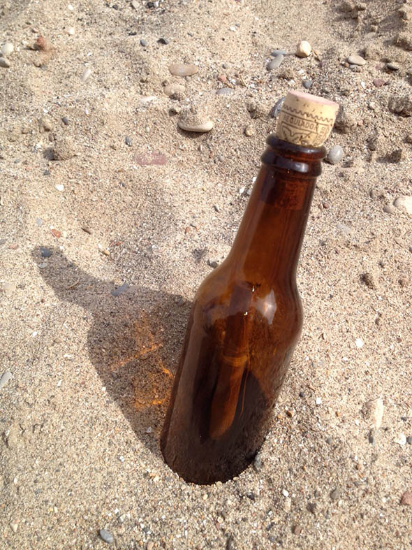

Carlos, Hannah und Noah werfen eine Flaschenpost ins Meer ... Mal sehen wie weit sie kommt :-)


Carlos, Hannah und Noah werfen eine Flaschenpost ins Meer ... Mal sehen wie weit sie kommt :-)


Noah arbeitet schwer an einem ganz besonderes Buch. Wenn er es fertig hat, werde ich dieses hier stolz präsentieren.
Weiterlesen →

Ja, ich weiss, dass wir diese Aktivität schon mal gemacht haben... und ich gebe zu, dass es auch nicht das letzte Mal sein wird. Ich nutze…
Weiterlesen →
Ein Taschen-Abakus! So gewinnen wir das Vertrauen zu größeren Zahlen, wenn die Finger beider Hände nicht mehr ausreichen um diese zu zählen. 1. Piekse 10 Löcher,…
Weiterlesen →
Selbst eine leere Tintenpatrone hinterläßt einen blauen Faden im Wasser. Es sieht nach echtem Zauber aus, und wenn es sich dann auch noch um eine Patrone…
Weiterlesen →
Nummern lernen Sortiere Steinchen nach Art oder Grösse und lege sie auf 6 verschiedene Häufchen. Die Augen des Würfels zeigen an von welchem Haufen Du einen…
Weiterlesen →